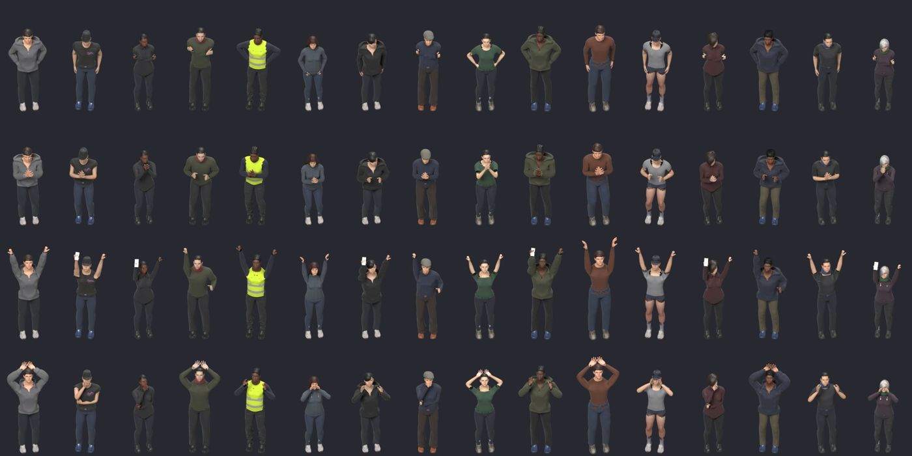
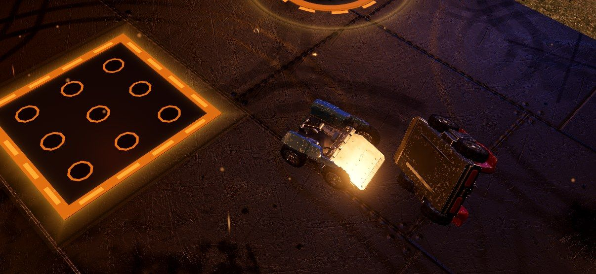
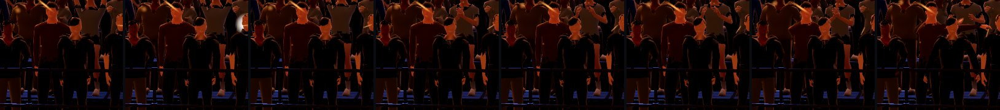

Crowd options
The venue crowd today, what makes it read as fake, and three directions built as real Godot prototypes on branch wave-c-crowd. Same fights, same cameras, same seconds, captured side by side in the Yard, the Coliseum and the Grinder.
"The crowd do look a bit robotic and AI in their looks and movements." Owner, 28 September
Every clip below is 3 seconds of the running game at 15 fps. A big hit fires one second in, so each clip shows the crowd idling, reacting and settling. Nothing here changes the fight: the crowd only reads where the machines are and when the crowd audio swells.
What reads as robotic today
Captured on main with the shipping crowd (MakeHuman picture cards, crowd A). Numbers are from the Yard unless marked.




Three directions
All three share two fixes that cost nothing: poses dissolve over 0.36 s instead of popping (cards), and every person has their own phase, speed and excitability.
A. Real crowd
Every person a low-poly 3D MakeHuman, animated from a baked texture.
- The same 16 MakeHuman people, rebuilt as meshes (about 1,350 triangles near the wall, about 320 further back) and drawn as MultiMesh instances, 16 draw calls per detail level.
- Six baked clips: idle sway (3.3 s loop), clap in, clap, raise arms, cheer bounce, flinch. Played per person and blended over the idle, so nothing pops.
- They face the arena, a tenth turned to a neighbour; heads and shoulders follow the machines.
- Reactions ripple out from the hit: the keen ones raise their arms, others clap, then settle.
- Tops, hats and scarves re-tinted per person from a club-night palette; height and build jittered. Faces painted flat, so none is ever readable.
- Lit by the venue's own floods, with rim light from behind.
B. Broadcast crowd
Keep the cards, darken the house, let light carry the motion.
- Everyone past the first rows becomes a dark, rim-lit shape; the front rows keep a little colour.
- Motion comes from phones, camera flashes, two light beams sweeping round the stands, and a few flags on poles.
- Card poses dissolve instead of popping.
C. Mix
A's 3D people on the rows by the wall, B's dark house behind.
- 3D people within 2.2 m of the wall (the rows every close camera sees).
- Everything further back is the broadcast treatment: dark shapes, phones, sweeps, flags.
Side by side
Phone cost
Measured on the desktop renderer with the same frames (Godot render info, whole frame, the crowd's share is the difference from today). Device timing is still owed for all options.
| Option | Triangles added (Yard / Coliseum / Grinder) | Draw calls added | Animation cost | Video memory | App size (pck) |
|---|---|---|---|---|---|
| Today | 120k / 71k / 84k whole frame | 3 (cards, silhouettes, specks) | Vertex shader, a few ALU ops per card | card atlas 2048 x 1024 | human atlas 1.46 MB (+ unused stylised atlas 1.53 MB) |
| A. Real crowd | +313k / +754k / +146k | +30 (16 people x 2 detail levels) | 4 to 8 texel fetches per vertex (2 frames of idle, 2 of the action, position and normal) | +10 to 11 MB (vertex animation texture, uncompressed) | +3.7 MB today; about +2 MB after trimming (below); minus 1.53 MB if the stylised atlas leaves the export |
| B. Broadcast | +0.1k / +0.5k / +0.1k | +1 (flags) | Same as today (the dissolve picks one of 4 poses per pixel, no extra fetch) | +0 | +0 (shaders only); minus 1.53 MB with the stylised atlas out |
| C. Mix | +191k / +193k / +55k | +17 | As A, but for 41 to 144 people | +10 to 11 MB | As A |
People counts: A draws 294 (Yard), 1,397 (Coliseum), 163 (Grinder) 3D people; C draws 143 / 144 / 41 and keeps the rest as cards. Each person MultiMesh spans every stand, so all instances are drawn whatever the camera sees; splitting them per stand side (planned) lets the renderer skip the stands behind the camera.
Tiering (A's system gives all three): high = A, medium = C (3D rows by the wall, dark house), low = B (dark cards with the dissolve). Every tier keeps the same people and palette, so the look changes by detail, not by style.
Trimming before it ships: idle loop 40 to 24 frames, vertex data as a binary resource instead of JSON, far detail level 320 to about 200 triangles in the Coliseum, per-stand culling. The fight hash is untouched in every option: the crowd reads the machines' positions and the crowd audio, and writes nothing back.
My pick: A, tiered Recommended
A is the only direction that fixes what the owner named. The crowd stops looking at the lens and starts watching the fight, the moves are continuous instead of four swapped stills, and repetition drops because clothes, heights and timing vary per person. B makes the problem darker rather than solving it: the front rows are the same praying cards. C is a good medium tier, but the seam between lit people and cut-outs shows in the wide shots the intro flyover uses.
Build plan if picked: per-stand MultiMeshes for culling, trimmed clips and a binary mesh resource, a seated clip for bench venues, phones held in the 3D hands (today's phone lights float next to them), two or three more body types, then device timing on the iPhone 18 Pro Max in the Coliseum (the heaviest venue) and the arena menu stage before the tiers are fixed.
Known prototype gaps in A: very close shots show the low-poly clothing edges; the palette's red and yellow tops may need toning per venue; hands are simple mitts.